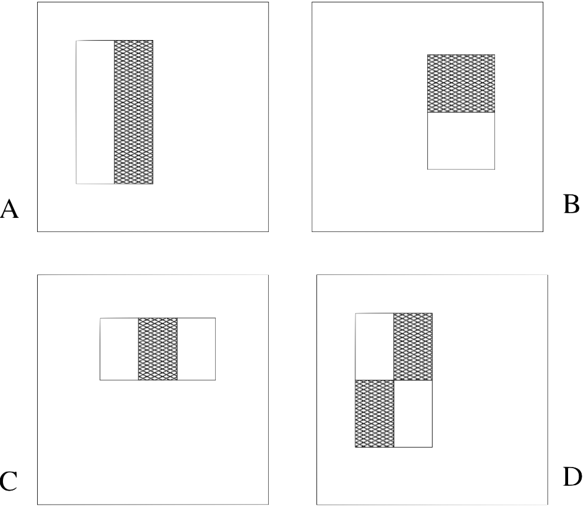
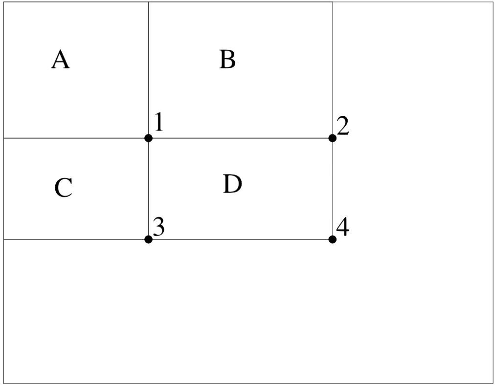
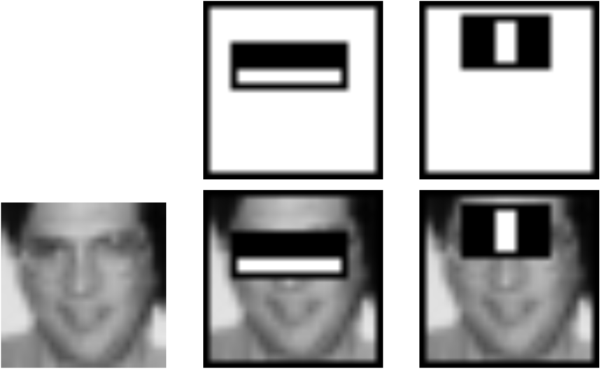
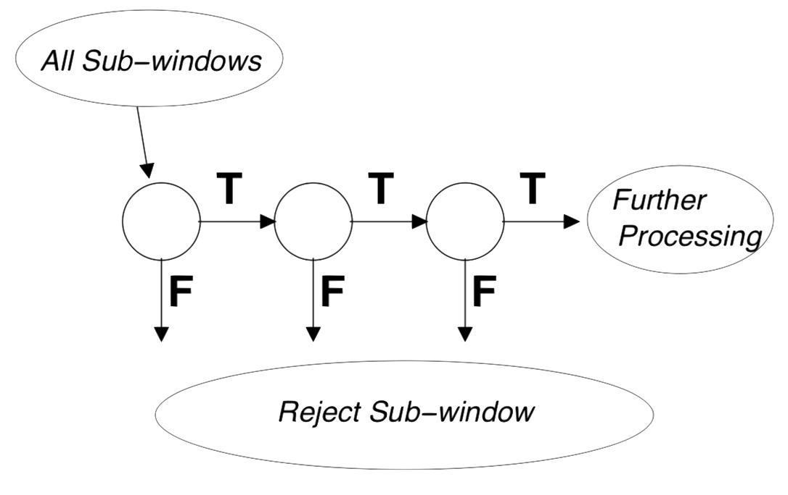
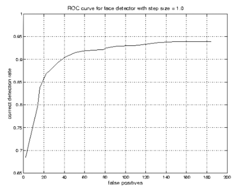
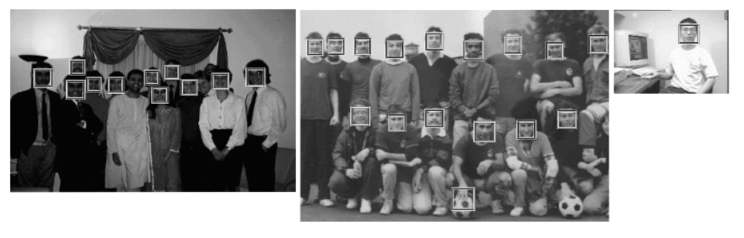

原文链接
https://ieeexplore.ieee.org/document/990517
原作者
Viola, P.; Jones, M.
介绍
这篇论文汇集了新的算法和见解，构建了一个强大且极其快速的对象检测框架。 这个框架部分受到人脸检测任务的启发，并在这个任务上进行了演示。 我们构建了一个正面人脸检测系统，该系统实现了与最佳公布结果相当的检测和误报率。 这种人脸检测系统与以前的方法最大的区别在于能够非常迅速地检测人脸。 在384 x 288像素的图像上运行，在传统的700 MHz Intel Pentium III上能以每秒15帧速度进行识别。 在其他人脸检测系统中，辅助信息（例如视频序列中的图像差异或彩色图像中的像素颜色）已被用于实现高帧率。 我们的系统只需要处理单个灰度图像中的信息，即能实现高帧率。 这些替代信息来源也可以与我们的系统集成以实现更高的帧速率。
我们的对象检测框架有三个主要贡献。我们将在下面简要介绍这些想法，然后在随后的章节中详细介绍它们。
本论文的第一个贡献是一个称为积分图的新图像表示法，它允许我们进行非常快速的特征评估。受到Papageorgiou等人的部分工作启发。我们的检测系统不直接处理图像亮度。像这些作者一样，我们使用了一组让人联想到Harr基函数的特征（尽管我们也会使用比Harr滤波器更复杂的相关滤波器）。为了许多尺度上快速计算这些特征，我们引入了图像的积分图表示。积分图可以对每像素使用几个操作从而从图像中计算出来。一旦计算出来，这些类Harr特征中的任何一个都可以在任何比例或位置上在常数时间内计算出来。
本文的第二个贡献是通过使用AdaBoost选择少量重要特征来构建分类器的方法。在任何图像子窗口中，类Harr特征的总数量非常大，远大于像素数量。为了确保快速分类，学习过程必须排除大量特征，并关注一小组关键特征。受Tieu和Viola工作的启发，特征选择是通过对AdaBoost过程的简单修改实现的：弱学习器受到约束，使得每个弱分类器只能依赖于单一特征。因此，选择新的弱分类器的boosting 过程的每个阶段都可以被视为特征选择过程。 AdaBoost提供了有效的学习算法和泛化性能的严格界限。
本文的第三个主要贡献是将级联结构中连续的更复杂分类器组合在一起，通过将注意力集中在有前途的图像区域上，显著提高了检测器的速度。关注焦点方法的概念是，通常可以快速确定图像中某个对象可能发生的位置。更复杂的处理只保留给这些有前途的地区。这种方法的关键措施是注意过程的“假否定”率。过滤器必须选择所有或几乎所有对象实例。
我们将描述一个训练极其简单和有效的分类器的过程，该分类器可以用作关注算子的“监督”焦点。术语监督指的是注意力操作者被训练来检测特定类别的例子。在人脸检测领域，使用由两个类Harr特征构建的分类器，可以实现少于1％的假阴性和40％的假阳性。该滤波器的作用是将最终检测器必须评估的位置数量减少一半以上。
那些未被初始分类器拒绝的子窗口由一系列分类器处理，每个分类器比最后一个稍微复杂。如果任何分类器拒绝子窗口，则不执行进一步的处理。级联检测过程的结构基本上是退化决策树的结构，因此与Geman和同事的工作有关。
一个非常快的人脸检测器将有广泛的实际应用。这些包括用户界面，图像数据库和电话会议。在不需要快速帧率的应用中，我们的系统将允许进行大量额外的事后处理和分析。此外，我们的系统可以在各种小型低功耗设备上实现，包括手持设备和嵌入式处理器。在我们的实验室中，我们在Compaq iPaq手持设备上实现了这种面部检测器，并且已经实现了每秒两帧的检测（该设备具有一个低功率200毫米Strong Arm处理器，它没有浮点硬件）。
本文的其余部分描述了我们的贡献和一些实验结果，包括对我们实验方法的详细描述。和这篇论文紧密相关的工作将在每一部分结束时讨论。
特征
我们的目标检测程序根据简单特征的值对图像进行分类。使用特征而不是直接使用像素有很多动机。最常见的原因是特征可以用于对使用有限数量的训练数据难以学习的特定领域知识进行编码。对于这个系统，还有第二个关键功能的动机：基于特征的系统的运行速度比基于像素的系统快得多。
使用的简单特征让人联想到Papageorgiou等人使用的基于Harr的函数。更具体地说，我们使用三种特征。two-rectangle特征的值是两个矩形区域内的像素总和之间的差值。这些区域具有相同的大小和形状，并且水平或垂直相邻（见图1）。three-rectangle特征计算两个外侧矩形内的和，从中心矩形中的总和中减去。最后，four-rectangle特征计算对角线对之间的差异。

由于探测器的基本分辨率为24x24，所以矩形特征的详尽集合非常大，超过180,000。请注意，与基于Harr的函数不同，矩形特征的集合是完整的。
积分图
使用图像的一种中间表示法可以快速计算矩形特征，我们称之为积分图。$(x,y)$位置处的积分图的值等于$(x,y)$上方和左侧的像素总和，即
其中$ii(x,y)$是积分图，$i(x,y)$是原图。另一种表示方法是：
（其中$s(x,y)$是行中的总和，规定$s(x,-1)=0$，且$ii(-1,y)=0$）
可以在原始图像上一次计算积分图像。
使用积分图像可以在四个数组参考中计算任何矩形求和（参见图2）。 显然，两个矩形和之间的差可以用8个参考值计算。 由于上面定义的two-rectangle特征涉及相邻的矩形和，因此可以使用六个数组参考值计算它们，在three-rectangle特征的情况下为八个数组参考值，而在four-rectangle特征中为九个数组参考值。

关于特征选择的讨论
与诸如可控滤波器等替代品相比，矩形特征有点原始。 可操纵滤波器及其亲属非常适合详细分析边界，图像压缩和纹理分析。 相比之下，矩形特征虽然对边缘，条纹和其他简单图像结构的存在很敏感，但却非常粗糙。 与可控滤波器不同，可用的唯一方向是垂直，水平和对角线。 然而，这组矩形特征提供了丰富的图像表示，支持有效的学习。 结合积分图，矩形特征集的效率为其有限的灵活性提供了充分的补偿。
学习分类函数
给定一个特征集和训练集的正样本图像和负样本图像，可以使用任意数量的机器学习方法来学习分类函数。在我们的系统中，AdaBoost的一个变体用于选择一小组特征并训练分类器。在其原始形式中，AdaBoost学习算法用于提高简单（有时称为弱）学习算法的分类性能。 AdaBoost学习程序提供了许多正式的保证。 Freund和Schapire证明了强分类器的训练误差在轮次数量上呈指数级增长。更重要的是后来证明了泛化性能的一些结果。关键的见解是泛化性能与示例的差距有关，并且AdaBoost能够快速实现大幅度的margin。
回想一下，每个图像子窗口有超过180,000个矩形特征，这个数量远大于像素数量。即使每个特征都可以非常有效地计算，但计算所有特征的代价非常昂贵。我们假设，而且已经通过实验证明，只有极少数这些特征可以结合起来形成一个有效的分类器。主要挑战是找到这些特征。
为了支持这个目标，弱学习算法被设计为选择最能区分正面和负面示例的单个矩形特征（这与图像数据库检索领域中的方法类似）。对于每个特征，弱学习器确定最优的阈值分类函数，使得最小数量的训练数据被错误分类。
一个弱分类器$h_j(x)$包含一个特征$f_i$，一个阈值$\theta_j$和一个parity来表示不等号的方向：
这里$x$是图像的24x24像素子窗口。 有关boosting过程的总结，请参阅表1。
在实践中，没有一个单独的特征可以以低错误率执行分类任务。 在boosting过程的早期阶段选择的特征的误差率在0.1和0.3之间。 随后任务中选择的特征，因为任务变得更加困难，错误率在0.4和0.5之间。
关于学习的讨论
许多通用特征选择程序已经被提出过了。 我们的最终应用要求采用非常积极的方法，这会放弃绝大多数特征。 对于类似的识别问题，Papageorgiou等人提出了一种基于特征方差的特征选择方案。 他们展示了从1734个特征中选择37个特征的好结果。Roth等人 提出了一个基于Winnow指数感知器学习规则的特征选择过程。 Winnow学习过程收敛于许多这些权重为零的解决方案。 尽管如此，这些方法仍然保留了大量的特征（可能是几百或几千个特征）。
学习结果
虽然第5部分介绍了最终系统的训练和性能，但有几个简单的结果值得讨论。 最初的实验表明，使用200个特征构建的正面人脸分类器的检测率为95％，误报率为在14084分之1。这些结果很有说服力，但对于许多现实世界的任务而言并不足够。 就计算速度而言，这个分类器可能比任何其他已发布的系统都快，需要0.7秒来扫描384 x 288像素的图像。 不幸的是，提高检测性能的最直接的技术是向分类器添加特征，这直接增加了计算时间。
对于人脸检测的任务，由AdaBoost选择的初始矩形特征是有意义的并且容易解释。 所选的第一个特征似乎集中在眼睛区域比鼻子和脸颊区域更暗的特性上（见图3）。 与检测子窗口相比，该特征相对较大，并且应该对脸部的大小和位置稍微不敏感。 所选的第二个特征依赖于眼睛比鼻梁更暗的特性。

级联
本节描述了一种构建级联分类器的算法，该算法在提高检测性能的同时从根本上缩短了计算时间。关键的认识是，可以构建更小，更有效的boosted分类器，它可以检测几乎所有正样本时拒绝许多负面的子窗口（即，可以调整boosted分类器的阈值，使得假阴性利率接近于零）。在调用更复杂的分类器以实现低误报率之前，使用更简单的分类器来拒绝大部分子窗口。
检测过程的整体形式是退化决策树，我们称之为“级联”（参见图4）。第一个分类器的正结果触发了第二个分类器的评估，该分类器也被调整以实现非常高的检测率。第二个分类器的积极结果触发第三个分类器，依此类推。任何时候如果产生负面结果，会导致立即拒绝子窗口。

级联中的阶段通过使用AdaBoost对分类器进行训练，然后调整阈值以最小化漏报率来构建。请注意，默认的AdaBoost阈值设计为在训练数据上产生较低的错误率。一般来说，较低的阈值产生较高的检测率和较高的假阳性率。
例如，一个优秀的第一阶段分类器可以通过降低阈值以最小化漏报率来从两个特征的强分类器构建。通过验证训练集测量，可以调整阈值以检测100％的面部，误报率为40％。有关这个分类器中使用的两个特征的描述，请参见图3。
两个特征分类器的计算量大约为60个微处理器指令。似乎很难想象任何更简单的过滤器都可以实现更高的拒绝率。相比之下，扫描一个简单的图像模板或单层感知器将需要每个子窗口至少20倍的操作次数。
级联的结构反映了这样的事实，即在任何单个图像中，绝大多数子窗口是负面的。因此，级联试图尽可能早地拒绝尽可能多的负面因素。虽然积极的实例会触发级联中每个分类器的评估，但这是非常罕见的事件。
就像决策树一样，后续的分类器使用通过所有先前阶段的示例进行训练。结果，第二个分类器面临比第一个更困难的任务。通过第一阶段的例子比典型的例子“更难”。更深层次的分类器面临的更困难的例子将整个接收器操作特性（ROC）曲线向下推。在给定的检测率下，更深的分类器相应具有更高的误报率。
训练级联分类器
级联训练过程涉及两种类型的权衡。 在大多数情况下，具有更多特征的分类器将实现更高的检测率和更低的误报率。 同时具有更多特征的分类器需要更多时间进行计算。 原则上可以定义一个优化框架，其中：
- 分类器阶段的数量
- 每个阶段的特征数量
- 每个阶段的阈值被折算以最小化预期的评估数量特征。
不幸的是，找到这个最佳值是一个非常困难的问题。选择一个目标用于误报的最小减少量和检测的最大减少量。 通过添加特征来训练每个阶段，直到满足目标检测和误报率（这些速率通过在验证集上测试检测器来确定）。 添加级联的阶段直到满足假阳性和检测率的总体目标。
探测器级联的讨论
完整的人脸检测级联有38个阶段，超过6000个特征。尽管如此，级联结构的平均检测时间较快。在一个困难的数据集上，包含507个面部和7500万个子窗口，每个子窗口使用平均10个特征评估来检测面部。相比之下，这个系统比Rowley等构建的检测系统的实现速度快大约15倍。
Rowley等人描述的脸部检测系统中出现了类似于级联的概念。其中使用两个检测网络。 Rowley等人使用更快但更不准确的网络来预先筛选图像，以便为更慢更准确的网络找到候选区域。虽然很难准确确定，但Rowley等人的两个网络人脸系统似乎是先前最快速的人脸检测器。
级联检测过程的结构基本上是退化决策树的结构，因此与Amit和Geman的工作有关。与使用固定探测器的技术不同，Amit和Geman提出了另一种观点，即使用不同寻常的简单图像特征共同出现来触发更复杂的探测过程。这样就不需要在许多潜在的图像位置和尺度上进行完整的检测过程。虽然这种基本的筛选非常有价值，但在实施过程中，有必要首先在每个位置上使用一些特征探测器。然后将这些特征分组以发现不同寻常的共同出现。实际上，由于我们的探测器形式及其使用的特征非常有效，因此在每个尺度和位置评估我们的探测器的摊销成本比在整个图像中查找和分组边缘要快得多。
在最近的工作中，Fleuret和Geman提出了一种面部检测技术，该技术依赖于测试的“链”来表示在特定尺度和位置存在面部。 Fleuret和Geman测量的图像属性，精细尺度边缘的分离，与简单的矩形特征完全不同，存在于所有尺度，并且有些是可解释的。这两种方法在他们的学习理念上也有很大不同。 Fleuret和Geman的学习过程背后的想法是密度估计和密度辨别，而我们的检测器是纯粹的辨别。最后，Fleuret和Geman的方法的假阳性率似乎高于Rowley等人以前的方法。和这种方法。不幸的是，论文没有报道这种定量结果。包含的示例图像每个都有2到10个假阳性。
成果
我们训练了38层级联分类器以检测正面人脸。为了训练检测器，使用了一组面部和非面部训练图像。面部训练集由4916个手工标记的人脸缩放并对齐到24 x 24像素的基本分辨率。这些面部图片来自于互联网上的一个随机爬虫。图5显示了一些典型的人脸示例。用于训练检测器的非人脸子窗口来自9544个图像，这些图像是手动检查的，其中不包含任何人脸。这些非脸部图像中有大约3.5亿个子窗口。
检测器前五层中的特征数量分别为1,10,25,25和50个特征。其余层的功能越来越多。所有图层中的要素总数为6061。

使用Adaboost训练程序，级联中的每个分类器用4916个面部图像训练（加上它们的垂直镜像共计9832个训练图像）和10,000个非面部子窗口（也是24×24像素）进行训练。对于最初的一个特征分类器，通过从一组9544图像中选择不包含面部的随机子窗口来收集非面部训练示例。通过扫描非面部图像的部分级联和收集假阳性获得用于训练后续层的非面部例子。每层最多收集10000个这样的非人脸子窗口。
最终检测器的速度
级联探测器的速度与每个扫描子窗口计算的特征数量直接相关。 在MIT + CMU测试集上评估，每个子窗口计算总共6061个中的10个特征的平均值。 这是可行的，因为绝大多数子窗口被级联中的第一或第二层拒绝。 在700 Mhz Pentium III处理器上，人脸检测器可以在约0.067秒内处理384×288像素的图像（使用1.25的起始标度和1.5以下的步长）。 这比Rowley-Baluja-Kanade探测器快大约15倍，比Schneiderman-Kanade探测器快大约600倍。
图像处理
用于训练的所有示例子窗口都进行了方差归一化以最小化不同照明条件的影响。 因此在检测过程中标准化也是必要的。 可以使用一对积分图快速计算图像子窗口的方差。 回想一下，$\sigma^2=m^2+\frac 1 N \sum x^2$，其中$\sigma$是标准差，$m$是平均值，$x$是子窗口内的像素值。 子窗口的平均值可以用积分图计算。 使用图像的平方的积分图（即，在扫描过程中使用两个积分图像）来计算像素平方的总和。 在扫描期间，图像归一化的效果可以通过对特征值进行后乘，而不是对像素进行预乘。
扫描检测器
最终的检测器在多个尺度和位置扫描图像。 缩放是通过缩放检测器本身来实现的，而不是缩放原图像。 这个过程很有意义，因为这些特征可以以相同的成本在任何规模下进行计算。 使用一组间隔为1.25倍的量表获得了良好的结果。
探测器也在整个图像上进行扫描。 通过将窗口移动$\Delta$像素来获得后续位置。 这个移动过程受检测器的规模的影响：如果当前的比例是$s$，那么窗口会被移动$[s\Delta]$，$[]$代表舍入操作。
$\Delta$值的选择影响检测器的速度以及精度。 我们这里提供的结果取的是$\Delta=1.0$。 通过设置$\Delta=1.5$我们可以实现显著的加速，精度只会略有下降。
结合多个检测结果
由于最终检测器对平移和缩放的小变化不敏感，因此扫描图像中每个面部周围通常会发生多次检测。 某些类型的假阳性通常也是如此。 在实践中，返回每个人脸的最终检测位置通常是有意义的。 为此目的，对检测到的子窗口进行处理以将重叠检测结果组合成单个检测结果是有用的。
在这些实验中，检测结果以非常简单的方式进行组合。 检测集合首先被分割成不相交的子集。 如果它们的边界区域重叠，则两个检测位于相同的子集中。 每个分区产生一个单一的最终检测。 最终边界区域的角点是该组中所有检测的角点的平均值。
在现实的图像数据集上的实验
我们在MIT + CMU正面测试集上测试了我们的系统。该套装由130张图片组成，其中有507个面部子图像组成。我们的检测器在这个测试集上的性能的ROC曲线显示在图6中。为了创建ROC曲线，将最终层分类器的阈值从$-\infin$调整到$+\infin$。调整阈值到$+\infin$将产生$0.0$的检测率和$0.0$的误报率。向$-\infin$调整阈值可以提高检测率和误报率，但仅限于某个特定点。这两个速率都不能高于检测级联减去最后一层的速率。实际上，$-\infin$阈值等同于移除该层。进一步增加检测和假阳性率需要降低级联中下一个分类器的阈值。
因此，为了构建完整的ROC曲线，分类器层被移除。与ROC曲线的x轴误报率相比，我们使用了假阳性的数量，以便于与其他系统进行比较。要计算误报率，只需除以扫描的子窗口总数。在我们的实验中，扫描的子窗口的数量是75,081,800。
不幸的是，大多数以前公布的人脸检测结果只包含单一的操作状态（即ROC曲线上的单个点）。为了使我们的检测器更容易比较，我们列出了其他系统报告的误报率检测率。表2列出了我们的系统以及其他已发布系统的各种错误检测的检测率。对于Rowley-Baluja-Kanade结果，检测器的许多不同版本都经过了测试，得到了许多不同的结果，它们都在同一标题下列出。对于Roth-Yang-Ahuja探测器，他们在MIT+CMU测试集上报告了他们的结果，减去包含去掉的线条画面的5个图像。
图7显示了我们的面部检测器在来自MIT + CMU测试集的一些测试图像上的输出。
| 检测器\ False detections | 10 | 31 | 50 | 65 | 78 | 95 | 167 |
|---|---|---|---|---|---|---|---|
| Viola-Jones | 76.1% | 88.4% | 91.4% | 92.0% | 92.1% | 92.9% | 93.9% |
| Viola-Jones(Voting) | 81.1% | 89.7% | 92.1% | 93.1% | 93.1% | 93.2% | 93.7% |
| Rowley-Baluja-Kanade | 83.2% | 86.0% | - | - | - | 89.2% | 90.1% |
| Schneiderman-Kanade | - | - | - | 94.4% | - | - | - |
| Roth-Yang-Ahuja | - | - | - | - | （94.8%） | - | - |


结论
我们已经提出了一种用于物体检测的方法，其将计算时间最小化，同时实现高检测精度 该方法被用于构建一个面部检测系统，比以往任何方法快约15倍。
本文汇集了新算法，图像表达方式和见解，这些都非常通用，可能在计算机视觉和图像处理中有更广泛的应用。
最后，本文展示了一套关于难度较高的人脸检测数据集的详细实验，这个数据集已经被广泛研究。 该数据集包含很多种情况下的人脸，包括：照明，比例，姿势和相机变化。 对这样庞大而复杂的数据集进行实验是困难和耗时的。 尽管如此，在这些条件下工作的系统不太可能脆弱或仅限于单一条件。 从这个数据集得出的更重要的结论不可能是实验性的假象。